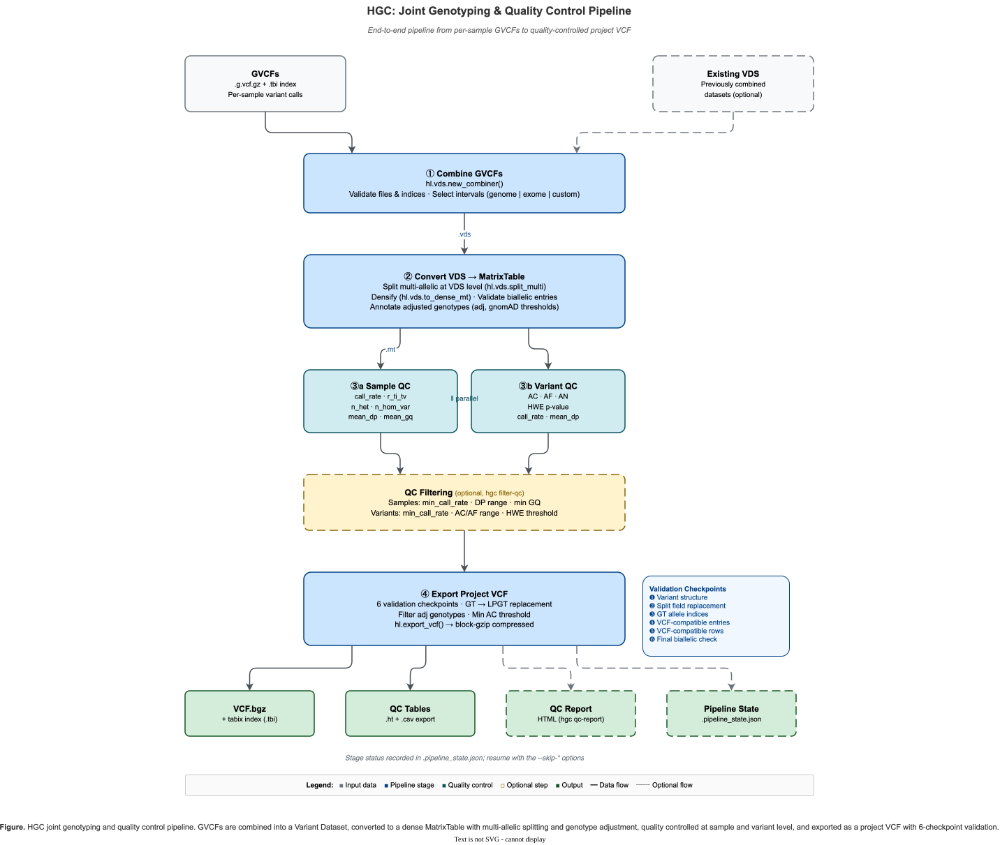

HGC: joint genotyping¶
HGC (Hail-based Genotype Combiner) joint-genotypes a cohort of per-sample gVCFs: it combines them into a Variant DataSet (VDS), converts that to a MatrixTable (MT), runs quality control, and exports a cohort VCF. It is built on Hail.

Figure 1. HGC: gVCF combining, VDS to MatrixTable conversion, sample and variant QC, optional filtering, and cohort VCF export.
Entry points¶
| Entry point | Use it when |
|---|---|
hvantk hgc pipeline |
You have a directory of gVCFs and want VDS → MT → cohort VCF with QC tables in one command; you can resume it by hand from the stage outputs. |
Individual commands (gvcf-combine, vds-combine, vds2mt, mt2vcf, compute-qc, filter-qc, qc-report, qc-summary) |
You already have a VDS or MT, want QC filter thresholds the pipeline doesn't expose (see Filter by QC metrics), or want to rerun a single stage without re-running the rest. |
Every command takes -h/--help. Every command except qc-summary, which reads text
files and never starts Hail, also takes --dry-run: it prints what the command would
do without starting Hail.
Quick start¶
# 1. gVCFs -> VDS -> MatrixTable -> cohort VCF
hvantk hgc pipeline -i /path/to/gvcfs -o /path/to/output
# 2. QC the MatrixTable the pipeline produced, and build an HTML report.
# compute-qc's -o is an output DIRECTORY (see "Compute QC metrics" below).
hvantk hgc compute-qc -i /path/to/output/cohort.mt -o /path/to/output/qc
hvantk hgc qc-report -i /path/to/output/qc/qc_metrics_with_qc.mt \
-o /path/to/output/qc/report.html
Preview either command's plan first with --dry-run. For a region-restricted run
(a single chromosome, an exome, a gene panel), see
Performance and sizing before running the combine step —
the default partitioning is sized for whole genomes and can leave most of your cores
idle on a smaller region.
Step-by-step commands¶
Combine gVCFs into a VDS¶
| Option | Meaning | Default |
|---|---|---|
-g, --gvcf-dir TEXT |
Directory of .g.vcf.gz files, each with a .tbi index |
none (need this or -v) |
-v, --vds-paths TEXT |
Existing VDS to combine with the gVCFs (repeatable) | none |
-o, --output TEXT |
Output VDS path | required |
--temp-dir, --tmp TEXT |
Temporary directory for intermediate files | $HGC_TEMP_DIR, else the system temp dir |
-s, --save-path TEXT |
Where to save the combiner's execution plan (JSON) | <output>.plan |
--import-interval-size INT |
Interval size in bp; Hail derives one partition per interval | Hail's genome default, 1.2 Mb |
--use-genome-default-intervals |
Explicit genome interval size (1.2 Mb) | already the default |
--use-exome-default-intervals |
Hail's exome interval size (60 Mb) | off |
--gvcf-batch-size INT |
gVCFs merged per tree-merge batch | Hail default, 50 |
--branch-factor INT |
Branch factor of the hierarchical merge | Hail default, 100 |
--dry-run |
Preview without executing | off |
--import-interval-size, --use-genome-default-intervals and
--use-exome-default-intervals are mutually exclusive. See
Performance and sizing for when to change the interval size.
Combine VDS datasets¶
Merge several VDS directories (for example, per-batch VDSes from incremental cohort building — see Worked examples):
| Option | Meaning | Default |
|---|---|---|
-i, --input-dir TEXT |
Directory containing VDS subdirectories (each ending in .vds) |
required |
-o, --output TEXT |
Output path for the merged VDS | required |
--validate / --no-validate |
Validate the merged VDS with Hail's validator | validate |
--overwrite / --no-overwrite |
Overwrite existing output | no-overwrite |
--dry-run |
Preview without executing | off |
Convert a VDS to a MatrixTable¶
| Option | Meaning | Default |
|---|---|---|
-i, --input TEXT |
Input VDS | required |
-o, --output TEXT |
Output MatrixTable path | required |
--adjust-genotypes / --no-adjust-genotypes |
Annotate the adj entry field (see adjusted-genotype thresholds) |
adjust |
--skip-split-multi |
Skip the VDS-level multi-allelic split | off (split runs) |
--skip-validation |
Skip the biallelic audit and genotype repair (see below) | off |
--skip-keying-by-cols |
Keep the VDS's own column order instead of keying and sorting columns by sample ID | off |
--overwrite / --no-overwrite |
Overwrite existing output | no-overwrite |
--n-partitions INT |
Coalesce the dense MatrixTable to this many partitions before writing (reduces only) | keep the VDS's own layout |
--dry-run |
Preview without executing | off |
Two things worth knowing before you reach for --skip-validation or --n-partitions:
- The densify runs exactly once. Hail is lazy and does not cache, so any eager
action on the dense MatrixTable (a
count, anaggregate) re-executes the whole densify.vds2mtis written so that only the final write touches the dense matrix: the biallelic audit (out-of-boundsGTindices,ADlength mismatches) runs on the sparse variant data before densification, and the repair is a lazy expression that fuses into the write. The audit is cheap (it scans only the sparse records), so there is rarely a reason to skip it. --n-partitionsmatters more as your cohort grows. A VDS's on-disk layout is derived from its reference-block count, which saturates as sample count grows, while the dense matrix keeps growing. Past that point the VDS's partition count stops tracking the size of what it partitions, and tasks get too thin to amortise overhead. Size--n-partitionsfrom the dense matrix you're producing, not the VDS.
Also: VDS-level splitting already produces biallelic GT/AD, so there is no manual
LGT→GT downcoding step to worry about. Adjusted-genotype annotation needs no extra
dependency — annotate_adj is ported from gnomAD's gnomad_methods (MIT) into
hvantk/algorithms/hgc/adj.py, with gnomAD's published thresholds kept verbatim.
Export a MatrixTable to VCF¶
| Option | Meaning | Default |
|---|---|---|
-i, --input TEXT |
Input MatrixTable | required |
-o, --output TEXT |
Output VCF path — use .vcf.bgz (block gzip), not .vcf.gz |
required |
--filter-adj / --no-filter-adj |
Keep only adj genotypes (recommended) |
filter |
--min-ac INT |
Minimum alternate allele count | 1 |
--split-multi / --no-split-multi |
Split multi-allelic variants if not already split | split |
--check-adj / --no-check-adj |
Verify adj is not systematically MISSING before filtering |
check |
--dry-run |
Preview without executing | off |
Use .vcf.bgz: block gzip is what bcftools, tabix and GATK expect, and mt2vcf warns
if you give it a plain .vcf.gz path. Keep --check-adj on: Hail's filter_entries
treats a MISSING adj as not-passing, so if adj were ever systematically missing
(for example, from a MatrixTable built before a dependent field like DP was
reliably populated), --filter-adj would silently delete genotypes instead of
failing loudly. --check-adj catches that before it happens.
The exported VCF carries standard INFO fields: AF, AC, AN, and call_rate
(fraction of samples with a called genotype).
Run the full pipeline¶
Stages (each can be skipped independently):
- Combine gVCFs → VDS
- Convert VDS → MatrixTable
- Compute sample QC metrics
- Compute variant QC metrics
- Export → cohort VCF
Required
| Option | Meaning |
|---|---|
-i, --input-dir PATH |
Directory of gVCF files (must exist) |
-o, --output-dir PATH |
Output directory |
Stage control and combiner/conversion tuning (same meaning as the matching
gvcf-combine/vds2mt options above)
| Option | Meaning | Default |
|---|---|---|
--skip-combine-gvcfs |
Skip stage 1 (needs --vds-path) |
off |
--skip-vds-to-mt |
Skip stage 2 (needs --mt-path) |
off |
--skip-compute-sample-qc |
Skip stage 3 | off |
--skip-compute-variant-qc |
Skip stage 4 | off |
--skip-export-pvcf |
Skip stage 5 | off |
--skip-validation |
Skip vds2mt's biallelic audit and repair |
off |
--vds-path PATH |
Existing VDS to resume from | - |
--mt-path PATH |
Existing MatrixTable to resume from | - |
--import-interval-size / --use-exome-default-intervals / --gvcf-batch-size / --branch-factor |
Stage-1 combiner tuning | see gvcf-combine |
--n-partitions INT |
Stage-2 MatrixTable partition count | keep the VDS's layout |
Processing and output
| Option | Meaning | Default |
|---|---|---|
--reference-genome [GRCh37\|GRCh38] |
Reference build | GRCh38 |
--tmp-dir PATH |
Temporary directory | system default |
--overwrite |
Overwrite existing output files | off |
--output-prefix TEXT |
Prefix for every output file | cohort |
--apply-qc-filters |
Filter before exporting the cohort VCF and write <prefix>_filtered.mt (see below) |
off |
--min-sample-call-rate FLOAT |
Sample call-rate threshold (used only with --apply-qc-filters) |
0.85 |
--min-variant-call-rate FLOAT |
Variant call-rate threshold (used only with --apply-qc-filters) |
0.85 |
--generate-qc-report |
Generate an HTML QC report after computing QC | off |
--dry-run |
Print the execution plan and stop, without creating files or starting Hail | off |
--apply-qc-filters drops samples below --min-sample-call-rate, and variants below
--min-variant-call-rate, with no alternate allele call (AC < 1), or with a
Hardy-Weinberg p-value below 1e-6. The AC and HWE thresholds are fixed; use
filter-qc to change them.
--apply-qc-filters and --generate-qc-report read the QC tables stages 3 and 4
write, qc/<prefix>_sample_qc.ht and qc/<prefix>_variant_qc.ht. A table comes from
this run, or, when its stage is skipped, from an earlier run in the same output
directory; with hvantk -v the log says which. --apply-qc-filters needs both
tables: when a skipped stage left no table, the run stops before any stage and names
the missing table; to get it, run without that --skip-compute-* flag.
--generate-qc-report uses the tables it finds, and logs a warning and writes no
report when there are none.
Resuming. The pipeline does not auto-resume: it always runs every stage you
haven't explicitly --skip-*'d. .pipeline_state.json in the output directory
records what completed and the error, if any, purely for you to inspect — to resume,
read it, then re-run with the matching --skip-* flags and --vds-path/--mt-path
pointing at the stage outputs that already succeeded:
cat /data/output/.pipeline_state.json
hvantk hgc pipeline -i /data/gvcfs -o /data/output \
--skip-combine-gvcfs --vds-path /data/output/cohort.vds \
--overwrite
--overwrite is usually needed on a resumed run, since the stage you're re-entering
at will try to write a path that already exists.
A resumed run with --skip-compute-sample-qc --skip-compute-variant-qc reuses the
QC tables the earlier run left in qc/, for both --apply-qc-filters and
--generate-qc-report.
QC metrics and filters¶
Compute QC metrics¶
-o/--output-dir is an output directory, not a file path — compute-qc writes
<prefix>_sample_qc.csv, <prefix>_variant_qc.tsv and (unless --no-save-mt)
<prefix>_with_qc.mt into it (<prefix> from --prefix, default qc_metrics). Feed
that _with_qc.mt to filter-qc or qc-report — a plain .mt without QC
annotations fails qc-report's "No QC annotations found" check immediately.
| Option | Meaning | Default |
|---|---|---|
-i, --input TEXT |
Input MatrixTable | required |
-o, --output-dir TEXT |
Output directory (see above) | required |
--sample-qc / --no-sample-qc |
Compute sample-level metrics | on |
--variant-qc / --no-variant-qc |
Compute variant-level metrics | on |
--call-field TEXT |
Entry field to call genotypes from | GT |
--prefix TEXT |
Output file prefix | qc_metrics |
--save-mt / --no-save-mt |
Also write the QC-annotated MatrixTable | save |
--adj-filter / --no-adj-filter |
Filter to adj genotypes before computing QC, so the metrics describe the filtered callset rather than the densified matrix |
off |
--remove-star-alleles / --keep-star-alleles |
Drop rows whose alt allele is the gVCF placeholder <*>/<NON_REF> or the spanning-deletion * — not real variants, and on a densified gVCF callset they can be around half of all rows |
remove |
--dry-run |
Preview without executing | off |
At least one of --sample-qc/--variant-qc must stay enabled. --adj-filter
requires an adj entry field (from vds2mt --adjust-genotypes); if the MatrixTable
has adj but you don't pass --adj-filter, compute-qc warns that the reported call
rate describes the unfiltered matrix, not what you'd actually export.
Filter by QC metrics¶
hvantk hgc filter-qc -i qc_results/qc_metrics_with_qc.mt -o cohort_filtered.mt \
--min-sample-call-rate 0.9 --min-ac 5
| Option | Meaning | Default |
|---|---|---|
-i, --input TEXT |
MatrixTable with QC annotations (e.g. <prefix>_with_qc.mt) |
required |
-o, --output TEXT |
Output filtered MatrixTable path | required |
--min-sample-call-rate FLOAT |
0.85 | |
--min-variant-call-rate FLOAT |
0.85 | |
--min-ac INT |
Minimum alt allele count | 1 |
--max-ac INT |
none | |
--min-af FLOAT |
none | |
--max-af FLOAT |
none | |
--hwe-threshold FLOAT |
Minimum p_value_hwe |
1e-6 |
--min-mean-dp FLOAT |
none | |
--max-mean-dp FLOAT |
none | |
--min-mean-gq FLOAT |
none | |
--sample-qc-name TEXT |
Name of the sample QC annotation to read | sample_qc |
--variant-qc-name TEXT |
Name of the variant QC annotation to read | variant_qc |
--overwrite / --no-overwrite |
no-overwrite | |
--dry-run |
Preview without executing | off |
Generate an HTML QC report¶
| Option | Meaning | Default |
|---|---|---|
-i, --input TEXT |
MatrixTable with QC annotations | required |
-o, --output TEXT |
Output HTML path | required |
--title TEXT |
Report title | Quality Control Report |
--include-plots CHOICE (repeatable) |
sample_overview, variant_overview, sample_call_rates, variant_call_rates, allele_frequencies, hwe, titv |
all seven |
--dry-run |
Preview without executing | off |
The report is self-contained (plots embedded as base64 PNGs). There is no standalone plotting/dashboard CLI; for ad hoc or custom plots, export the QC metrics as pandas DataFrames and plot them directly (see Worked examples).
Summarize QC metrics¶
| Option | Meaning | Default |
|---|---|---|
-d, --qc-dir TEXT |
Directory containing QC metric files | required |
--sample-file TEXT |
Specific sample QC file | auto-detected: the first *sample_qc*.csv in --qc-dir |
--variant-file TEXT |
Specific variant QC file | auto-detected: *variant_qc*.tsv, falling back to *variant_qc*.csv |
-o, --output TEXT |
Write the summary here, creating missing parent directories | none: print only each file's name, row count and column count |
--format [csv\|json\|markdown] |
Format of the -o file |
markdown |
No --dry-run on this command. The statistics are in the -o file only:
describe()-style statistics (count/mean/std/min/25%/50%/75%/max) per numeric metric
column, not a QC pass/fail. On the pipeline's qc/ directory the variant statistics
cover only the 10,000 variants of its preview file (see Outputs).
Metric names¶
Sample metrics¶
Field names in sample_qc, from Hail's hl.sample_qc: call_rate, n_called,
n_not_called, n_filtered, n_hom_ref, n_het, n_hom_var, n_non_ref, n_snp,
n_insertion, n_deletion, n_singleton, n_transition, n_transversion, n_star,
r_ti_tv, r_het_hom_var, r_insertion_deletion, plus nested dp_stats/gq_stats
(mean/stdev/min/max) when DP/GQ are present. hvantk additionally adds flat
sibling columns sample_qc_mean_dp / sample_qc_mean_gq (not nested under
sample_qc) — these are what filter-qc's --min-mean-dp/--max-mean-dp/
--min-mean-gq filter on.
Variant metrics¶
Field names in variant_qc, from Hail's hl.variant_qc: AF, AC,
homozygote_count (arrays, one element per allele including the reference), AN,
call_rate, n_called, n_not_called, n_filtered, n_het, n_non_ref,
het_freq_hwe, p_value_hwe, p_value_excess_het, plus dp_stats/gq_stats and the
same flat variant_qc_mean_dp / variant_qc_mean_gq siblings. filter-qc reads the
alt-allele element of the arrays (AC[1], AF[1]), so it assumes biallelic data —
run after vds2mt's split, not before.
Adjusted-genotype (adj) thresholds¶
From vds2mt --adjust-genotypes
(hvantk/algorithms/hgc/adj.py, ported from gnomAD's annotate_adj, thresholds kept
verbatim): GQ >= 20, DP >= 10 (DP >= 5 for a haploid call), and allele balance
>= 0.2 for each called allele on a heterozygous call (homozygous calls skip the
allele-balance test).
Outputs¶
Data formats
| Format | What it is | On disk |
|---|---|---|
| gVCF | Single-sample calls plus reference blocks | .g.vcf.gz + .tbi |
| VDS | Hail's storage-optimized format; separates reference data from variant data | directory ending .vds |
| MatrixTable (MT) | Hail's dense analysis format; rows = variants, columns = samples | directory ending .mt |
| VCF | Standard variant format, exported by mt2vcf |
.vcf.bgz (block gzip) |
compute-qc output directory (filenames use --prefix, default qc_metrics):
qc_results/
├── qc_metrics_sample_qc.csv # comma-separated, every sample
├── qc_metrics_variant_qc.tsv # TAB-separated (alleles/struct fields contain
│ # commas Hail doesn't quote); every variant,
│ # exported directly by Hail, not collected
└── qc_metrics_with_qc.mt # QC-annotated MatrixTable (unless --no-save-mt)
pipeline output directory (filenames use --output-prefix, default cohort):
output_directory/
├── cohort.vds/ # Stage 1
├── cohort.mt/ # Stage 2
├── cohort_filtered.mt/ # Stage 5, only with --apply-qc-filters
├── cohort.vcf.bgz # Stage 5
├── qc/
│ ├── cohort_sample_qc.ht # Stage 3, Hail Table, every sample
│ ├── cohort_sample_qc.csv # same data, comma-separated
│ ├── cohort_variant_qc.ht # Stage 4, Hail Table, every variant
│ ├── cohort_variant_qc.tsv # first 10,000 variants, TAB-separated
│ └── cohort_qc_report.html # only with --generate-qc-report
├── logs/
│ └── pipeline_<timestamp>.log # the run's log, see below
└── .pipeline_state.json # inspect this to resume manually, see above
cohort_filtered.mt is written here even when --mt-path points elsewhere. It holds
the filtered genotypes, without the QC annotations the filters used.
cohort_sample_qc.csv (every sample, comma-separated) and cohort_variant_qc.tsv use
the same names, delimiters and columns as compute-qc's files. The variant TSV is a
preview of the first 10,000 variants; the full per-variant table is
cohort_variant_qc.ht, and compute-qc exports every variant when you need the text.
There is no _with_qc.mt here: unlike compute-qc, the pipeline never writes a
QC-annotated copy of the MatrixTable, which would be a full extra write of the whole
cohort on every run, since the QC stages run by default. --apply-qc-filters
annotates cohort.mt with cohort_sample_qc.ht and cohort_variant_qc.ht, and
--generate-qc-report reads only those two tables.
The log holds the messages of every HGC module during the run (stages, QC, combiner,
converters), at the level the console shows: warnings and errors by default, and the
stage-by-stage progress with the global -v option (hvantk -v hgc pipeline ...).
Performance and sizing¶
Combiner parallelism (stage 1). Hail's gVCF combiner creates one partition per genomic interval, so the interval size caps how many cores can do useful work. The default — Hail's whole-genome default, 1.2 Mb — is sized for whole-genome gVCFs. For a region-restricted run it produces far fewer partitions than you likely have cores:
| Input region | Partitions at the 1.2 Mb default |
|---|---|
| chr20 (64.4 Mb) | 54 |
| chr1 (249.0 Mb) | 208 |
| whole genome (3.1 Gb) | ~2,584 |
Keep partitions at roughly 2-4x your core count. On a 128-core run of chr1, lower the interval size so partitions clear that target (600 kb -> ~415 partitions on chr1, ~3x 128 cores):
MatrixTable partitioning (stage 2). A VDS's on-disk partition count is derived
from its reference blocks, which is a property of the genome and saturates as sample
count grows — while the dense matrix you're producing keeps growing. Past that point
the VDS's layout stops tracking the data it partitions, and vds2mt/the pipeline's
stage 2 keeps using it unless you override it with --n-partitions, sized from the
dense matrix you expect, not the VDS.
Memory. Set Hail's driver memory for larger cohorts:
export PYSPARK_SUBMIT_ARGS="--driver-memory 32g pyspark-shell".
Storage, as rough ratios of the input gVCF size (not a measured benchmark — actual ratios depend on cohort size, ploidy and compression): VDS ~50-70%; MatrixTable ~100-150% of the VDS; temporary space during combine, 2-3x the input gVCFs.
Actual runtimes vary too much by hardware, storage and gVCF size to state here.
examples/hgc/scalability/ and examples/hgc/cpu_scaling/ include benchmark scripts
if you want numbers for your own setup.
Python API¶
Core functions¶
from hvantk.algorithms.hgc import (
combine_gvcfs,
combine_vdses,
convert_vds_to_mt,
convert_mt_to_multi_sample_vcf,
)
| Function | Returns |
|---|---|
combine_gvcfs(gvcf_dir, vds_output_path, tmp_path, save_path, vdses, kwargs, reference_genome="GRCh38") |
None |
combine_vdses(vdses_dir, output_path, validate=True, overwrite=False) |
None |
convert_vds_to_mt(vds_path, output_path, adjust_genotypes=True, skip_split_multi=False, skip_validation=False, skip_keying_by_cols=False, overwrite=False, n_partitions=None) |
None |
convert_mt_to_multi_sample_vcf(mt_path, vcf_path, filter_adj_genotypes=True, min_ac=1, split_multi=True, check_adj=True) |
None |
combine_gvcfs's kwargs forwards to Hail's hl.vds.new_combiner(); its interval
keys (import_interval_size, use_genome_default_intervals,
use_exome_default_intervals, intervals) are mutually exclusive, same as the CLI.
QC functions¶
from hvantk.algorithms.hgc import (
QCMetrics,
compute_sample_qc,
compute_variant_qc,
compute_full_qc,
extract_qc_metrics,
filter_samples_by_qc,
filter_variants_by_qc,
get_qc_summary_stats,
prepare_qc_for_visualization,
save_qc_metrics,
)
| Function | Returns |
|---|---|
compute_sample_qc(mt, name="sample_qc", call_field="GT") |
MatrixTable |
compute_variant_qc(mt, name="variant_qc", call_field="GT") |
MatrixTable |
compute_full_qc(mt, sample_qc_name="sample_qc", variant_qc_name="variant_qc", call_field="GT") |
QCMetrics |
extract_qc_metrics(mt, sample_qc_name="sample_qc", variant_qc_name="variant_qc", max_variant_rows=500_000) |
(DataFrame, DataFrame) |
filter_samples_by_qc(mt, min_call_rate=0.85, min_mean_dp=None, max_mean_dp=None, min_mean_gq=None, sample_qc_name="sample_qc") |
MatrixTable |
filter_variants_by_qc(mt, min_call_rate=0.85, min_ac=1, max_ac=None, min_af=None, max_af=None, hwe_threshold=1e-6, variant_qc_name="variant_qc") |
MatrixTable |
get_qc_summary_stats(qc_df, metrics=None) |
DataFrame |
prepare_qc_for_visualization(qc_metrics, sample_metrics=None, variant_metrics=None) |
Dict[str, DataFrame] |
save_qc_metrics(qc_metrics, output_dir, prefix="qc_metrics", save_mt=True) |
Dict[str, str] |
QCMetrics (returned by compute_full_qc) holds .mt, .sample_qc, .variant_qc
(Optional[hl.Table]), .has_sample_qc/.has_variant_qc, .count_samples()/
.count_variants(), .get_sample_metrics_df(), .get_variant_metrics_df(max_rows=500_000)
(subsamples above the row budget — a real dense chromosome can be ~10-11M variants,
and collecting every row to the driver has killed real runs; the full table is always
on disk via save_qc_metrics/compute-qc), and .generate_html_report(output_path, **kwargs).
qc_results = compute_full_qc(mt)
report_path = qc_results.generate_html_report("qc_report.html")
sample_df = qc_results.get_sample_metrics_df()
import matplotlib.pyplot as plt
fig, ax = plt.subplots()
ax.hist(sample_df["sample_qc.call_rate"], bins=30)
ax.axvline(0.85, color="red", ls="--", label="min call rate")
ax.set_xlabel("Sample call rate")
ax.legend()
fig.savefig("call_rate.png", dpi=300, bbox_inches="tight")
Pipeline API¶
config = PipelineConfig(
input_dir="/data/gvcfs",
output_dir="/data/output",
output_prefix="cohort",
reference_genome="GRCh38",
)
errors = config.validate()
if errors:
raise SystemExit(errors)
runner = PipelineRunner(config)
runner.show_plan() # optional preview
state = runner.run()
print(state.outputs) # {"vds": ..., "mt": ..., "compute_sample_qc": ..., ...}
print(state.errors)
Constructing PipelineRunner(config) creates nothing and does not start Hail, so
.show_plan() is a true dry run. .run() creates the output, qc/ and logs/
directories, writes the run's log file, and initializes Hail through the same
idempotent init_hail the rest of hvantk uses, so more than one run in a process is
safe.
PipelineConfig is a dataclass with every option the CLI exposes (see
Run the full pipeline); PipelineRunner.run() returns a
PipelineState with .completed_stages, .outputs and .errors, and persists itself
to <output_dir>/.pipeline_state.json. PipelineState.load(path) reads that file
back, also one written by an older hvantk: it ignores configuration keys this version
no longer has. Nothing in the CLI calls it automatically — see
Resuming above. PipelineStage is the stage-name enum
(COMBINE_GVCFS, VDS_TO_MT, COMPUTE_SAMPLE_QC, COMPUTE_VARIANT_QC,
EXPORT_PVCF).
Utility functions¶
Imported from hvantk.algorithms.hgc: validate_vcfs_paths(directory, pattern=None)
and validate_vds_paths(vdses) (both -> List[str]),
check_path_exists_and_readable(path) -> str, and
sort_mts_cols(mts, ref_index=0) -> List[MatrixTable].
Two advanced functions need a direct import from hvantk.algorithms.hgc.combiners
rather than the package root: combine_matrix_table_rows(mt_paths, output_path,
n_partitions, force_sort_cols=False, overwrite=False, kwargs=None) and
combine_matrix_table_cols(mt_paths, output_path, n_partitions, overwrite=False,
kwargs=None) (both -> None), for combining already-built MatrixTables by variant or
by sample.
Worked examples¶
Incremental cohort building — combine in batches, then merge:
from hvantk.algorithms.hgc import combine_gvcfs, combine_vdses
for batch in ("batch1", "batch2"):
combine_gvcfs(
gvcf_dir=f"data/{batch}",
vds_output_path=f"output/{batch}.vds",
tmp_path="tmp",
save_path=f"output/{batch}_plan.json",
vdses=[],
kwargs={},
)
combine_vdses(
vdses_dir="output", # contains batch1.vds and batch2.vds
output_path="output/merged.vds",
validate=True,
)
Custom filtering with Hail expressions — when filter_samples_by_qc/
filter_variants_by_qc's fixed set of thresholds isn't enough, filter the
QC-annotated MatrixTable directly:
import hail as hl
mt = hl.read_matrix_table("qc_metrics_with_qc.mt")
mt = mt.filter_rows(
(mt.variant_qc.AC[1] > 2) & (mt.variant_qc.call_rate > 0.95)
)
mt = mt.filter_cols(mt.sample_qc.call_rate > 0.90)
mt.write("cohort_filtered.mt")
Troubleshooting¶
ValueError: Call field 'GT' not found in MatrixTable entries — raised by
compute_sample_qc/compute_variant_qc (and so by compute-qc) when the MatrixTable
has no plain GT entry field and no split-dataset LPGT fallback either. This
happens if vds2mt --skip-split-multi was used on data that still carries only local
allele fields (LGT/LA). Re-run vds2mt without --skip-split-multi, or pass
--call-field LPGT if the MatrixTable does carry per-split local genotypes.
Out of memory during gVCF combination or densify — raise the driver memory before
running: export PYSPARK_SUBMIT_ARGS="--driver-memory 64g pyspark-shell".
A gVCF's .tbi index is missing — gvcf-combine/pipeline validate every gVCF's
companion index and raise FileNotFoundError for the missing one. Create it with
tabix -p vcf <file>.g.vcf.gz.
qc-report says "No QC annotations found in MatrixTable. Run compute-qc first."
— the input MatrixTable lacks sample_qc/variant_qc columns. This is expected for
a plain vds2mt output (feed it compute-qc's <prefix>_with_qc.mt instead) and
for the pipeline's own <prefix>.mt, which never carries them either: the
pipeline keeps QC separate (qc/<prefix>_sample_qc.ht/variant_qc.ht) rather than
writing a QC-annotated copy of the whole MatrixTable. Pass --generate-qc-report to
the pipeline itself instead of running qc-report against <prefix>.mt directly.
An exported _variant_qc.tsv doesn't parse downstream (numeric columns come back as
strings or empty) — Hail's Table.export formats floats using the JVM's default
locale. On a machine whose locale uses a comma decimal separator, call_rate is
written 1,0000e+00 instead of 1.0000e+00, and every numeric column reads as text.
compute-qc and the pipeline's QC stages both detect this and raise instead of writing
a silently broken file; fix it by starting the JVM with
-Duser.language=en -Duser.country=US (for example via
PYSPARK_SUBMIT_ARGS="--driver-java-options='-Duser.language=en -Duser.country=US'").
See also¶
- Installation — Hail/Spark setup, the memory and locale environment variables used above.
- Running on HPC — running HGC under Slurm/Apptainer at cohort scale.
- HGC examples — a runnable QC workflow and the scalability / CPU-scaling benchmark scripts.
- Contributing — development workflow.